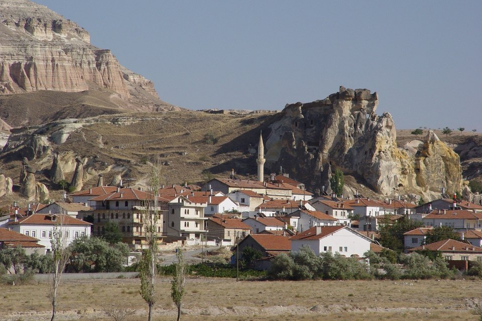

Turkey · Çavuşin
Çavuşin audio guide
3 stops · 3 min · offline · plays as you arrive
This guide is Free in the app when it launches. Checkout is not open yet; this button is a placeholder. Email hello@getearwise.com.
A 3-stop offline audio guide to Çavuşin in Çavuşin, recorded in 10 languages and designed to play as you arrive. It covers the cliff-face cave dwellings and early Byzantine churches of Çavuşin. Download once; you will not need a signal on the ground.
Stops
- 1
The emperor's church
By the rock with the metal stairway, beside the Göreme–Avanos road at the entrance to Çavuşin. This is stop 1 on the route.
- 2
The old village
The next story is about The old village.
- 3
St John the Baptist
Near the Church of St John the Baptist, high on the cliff above the old village. This is stop 3 on the route.
On the map
All 3 stop pins for this guide are marked. Open map